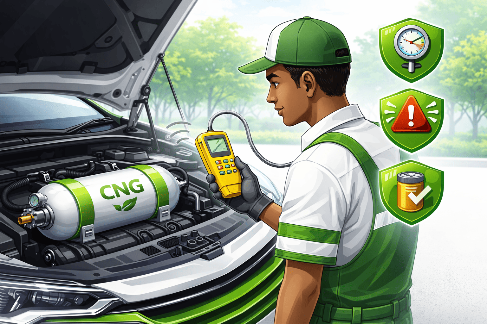

Regular Inspection
Always inspect your CNG system regularly to detect leaks or weak early.
Certified Installation
Use only certified technicians to install your CNG system to avoid risks.
Proper Cylinder Handling
Cylinders must be secured properly and protected from damage or heat.
Safe Refueling
Always turn off your engine and follow station safety procedures.
⚠ Important Safety Notice
Never modify your CNG system yourself. Unauthorized changes can lead to dangerous leaks or explosions.
Real-Life Scenario
A driver in Lagos avoided a major accident by detecting a small gas leak early during routine inspection.